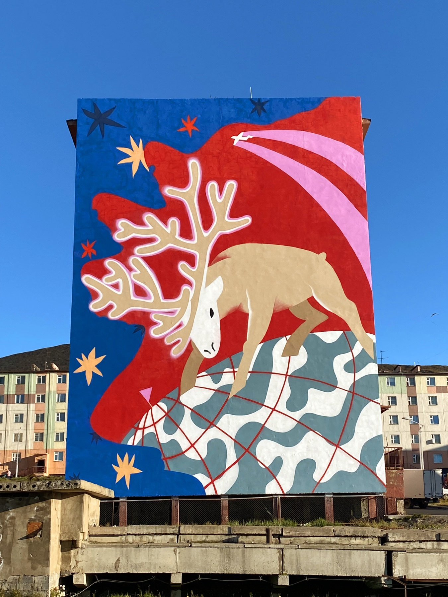
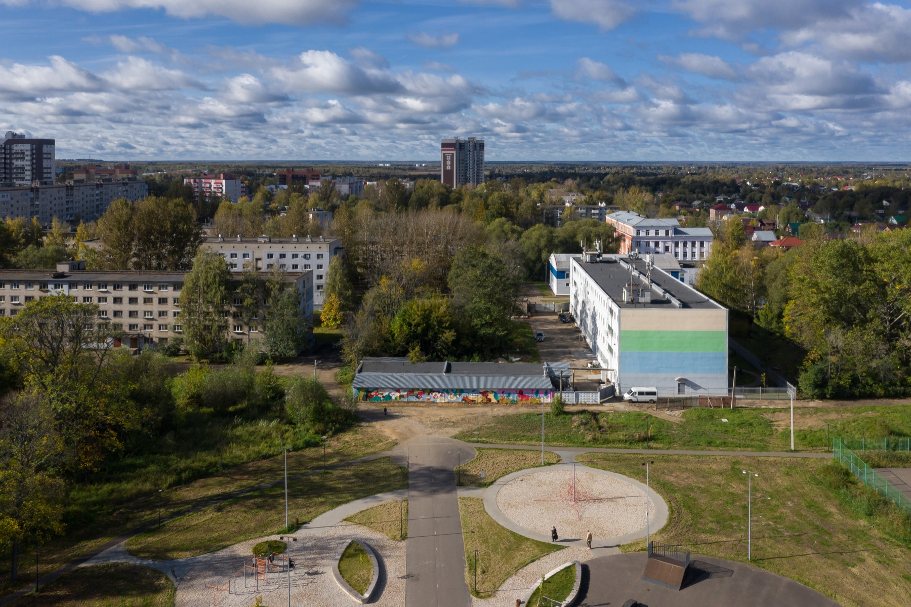

Маяк
2024 · Екатеринбург · Мурал / формат уточнить
Дизайн-спринт главной
Цель этого экрана - выбрать тон, типографику и ритм галереи до разработки новых страниц.
Public art / Урал / городская среда
Public art художница с Урала: муралы, объекты и проекты для городской среды.
2024 · Екатеринбург · Мурал / формат уточнить

2023 · Ярославль · Мурал

2022 · Екатеринбург · Объект

2022 · Певек · Триптих

Фасады, объекты, север, фестивали
Муралы, объекты и public art проекты в городах: от Екатеринбурга до Чукотки.
Public art художница с Урала. Муралы, объекты и городские проекты.
Что решаем
01 спокойная редакционная витрина, ближе к портфолио художницы.
02 акцент на городе, масштабе и географии public art.
03 плотный типографический индекс, ближе к архиву и CV.